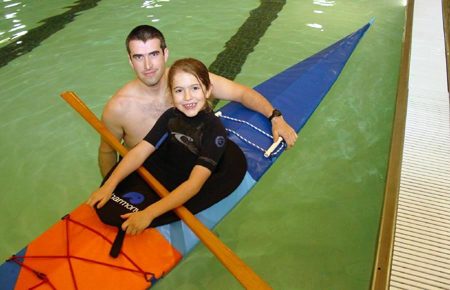

| Sea Pup | Menu Previous Page Next Page |
|
 Marcel and McKinley Rodriquez and the Sea Pup Folder The Sea Pup was designed for kids and small adults. Though it has a narrow beam ( 19"), it retains good stability for learning basic paddling skills, and enough performance and size for many years of use. Like the other folders in this manual, it uses aluminum stringers, HDPE cross sections, and a PVC skin. Paddler weights range from 75 to 140 lbs. For smaller paddlers, the Sea Flea is now available. The Sea Pup Offsets/drawings are at the end of this section. Use the (BACK) key to return. Offsets are available for single-chine, multi-chine, and woodstrip versions. Marcel has included Sea Pup construction details / pics at his website "Marcels Kayak Web"
|
|